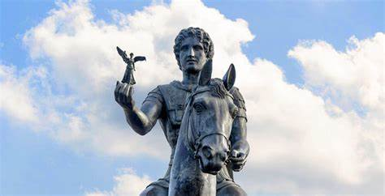
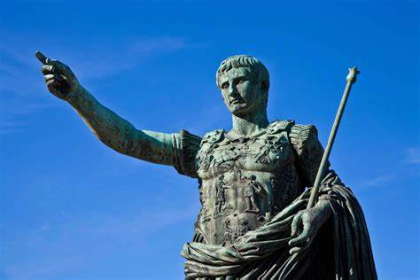
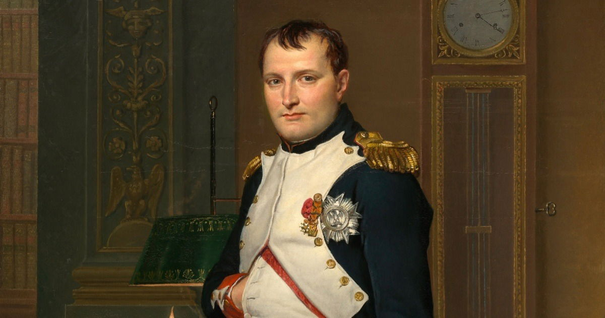
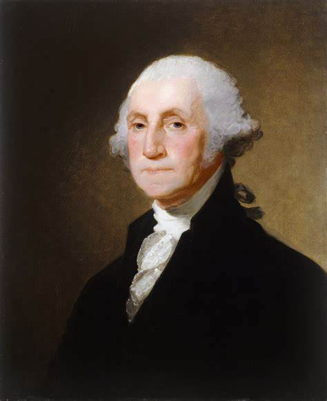
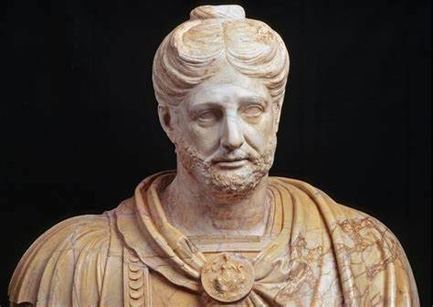

Líderes Militares
Ao longo da história, muitos líderes militares se destacaram por suas habilidades estratégicas e táticas. Aqui estão alguns dos mais notáveis:
1. Alexandre, o Grande
Alexandre, o Grande, foi um dos maiores conquistadores da história. Ele expandiu o Império Macedônio até a Índia e é conhecido por suas táticas inovadoras e liderança inspiradora.
2. Júlio César
Júlio César foi um general romano que desempenhou um papel crucial na transformação da República Romana no Império Romano. Ele é famoso por suas campanhas na Gália e por suas reformas militares.
3. Napoleão Bonaparte
Napoleão Bonaparte foi um líder militar e político francês que se destacou durante as Guerras Napoleônicas. Ele é conhecido por suas táticas de batalha e pela reorganização do exército francês.
4. George Washington
George Washington foi o comandante-chefe do Exército Continental durante a Guerra de Independência dos Estados Unidos. Sua liderança foi fundamental para a vitória americana contra os britânicos.
5. Aníbal Barca
Aníbal foi um general cartaginês considerado um dos maiores estrategistas militares da história. Ele é famoso por sua travessia dos Alpes com elefantes durante a Segunda Guerra Púnica.
